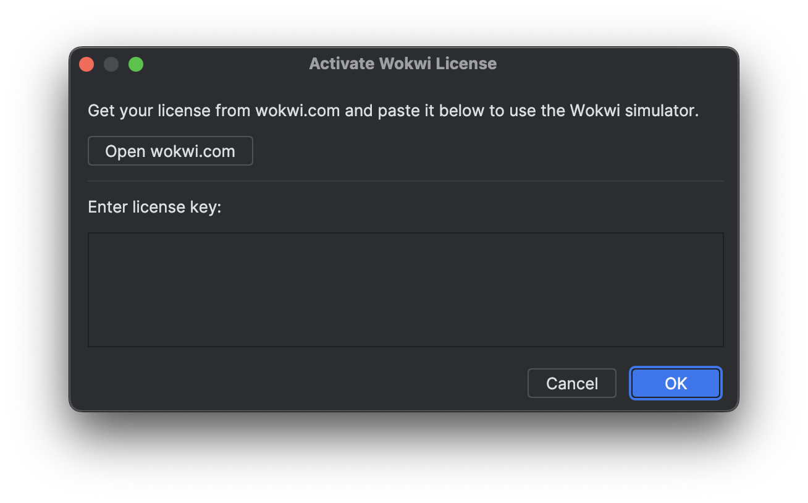

The Wokwi Intellij plugin is an open source plugin to make the Wokwi simulator available to Intellij based Jetbrains IDEs such as CLion and RustRover.
Wokwi Intellij uses the same configuration method as the official Wokwi VS Code extension, to make switching between IDEs as simple as possible. It therefore works for the same set of platforms as the VS Code extension.
Installation
Install and Setup Wokwi Intellij
Install the Wokwi Intellij plugin from Jetbrains' marketplace.
Click on the icon to open the Wokwi toolwindow
Click Activate License. This will open a dialog window where you can enter your license key.

Click Open wokwi.com to open the browser. Copy your license key and paste it into the dialog window.
Click Ok to save the license key.
First Project
The Wokwi documentation has a rich list of example projects. Checkout the next page to get started with a custom Wokwi project.
 icon to open the Wokwi toolwindow
icon to open the Wokwi toolwindow